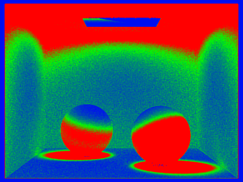
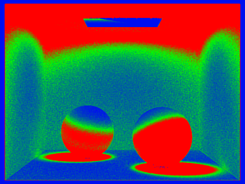
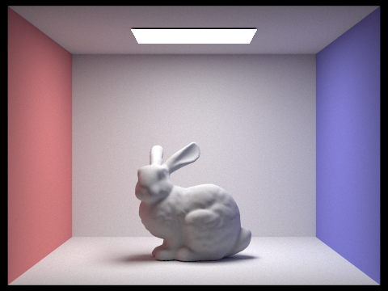
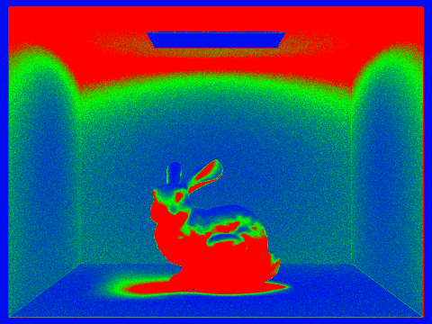

Speeding up Rendering Again
Before this, we implemented each pixel with the same amount of samples per pixel. But not all pixels are equally hard to render. For example, a pixel that is showing a wall would likely be roughly the same color, regardless of where in the pixel a ray is drawn. Compare this to a high frequency part of the bunny, like the stomach, or exactly on the corner of a wall. In these places, it is possible that a small subpixel deviation will cause a large change in the color. To measure this more concretely, we use the statistical method suggested by the homework spec. We use the mean and standard variation of the samples drawn so far to compute a confidence iterval. Once we are 95% confident in this interval, we stop sending out new rays. To calculate mean and SD, we keep two running tallies: $$ s_1 = \sum_{i=1}^{n} x_i \qquad s_2 = \sum_{i=1}^{n} x_i^2 $$
Then, we calculate mean and variance:
$$ \mu = \frac{s_n}{n} \qquad \sigma^2 = \left(\frac{1}{n-1}\right) \cdot \left(s_2 - \frac{s_1^2}{n}\right) $$
From here, we calculate our confidence interval as
$$ I = 1.96 \cdot \frac{\sigma}{\sqrt{n}} $$
If this is less than $\text{maxTolerance} \cdot \mu$, then we terminate the rendering of this pixel and use what we have sampled so far. Since computing these statistics is quite compiutationally intensive, we compute these statistics once every samplesPerBatch samples. For example, for the below renders, we ran 2048 samples per pixel, and computed the statistics once every 64 samples.
Examples
 

The sphere scene generated with 2048 samples per pixel, with 64 samples per batch and a max tolerance of 0.05.


The sphere scene generated with 2048 samples per pixel, with 64 samples per batch and a max tolerance of 0.05.